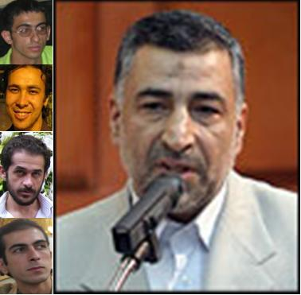

نفر از دانشجویان دانشگاه امیرکبیر که بهار امسال در پی انتشار نشریات جعلی در این دانشگاه دستگیر و در تابستان به قید وثیقه از زندان آزاد شدند، طی نامه سرگشاده ای به رئیس دادگستری استان تهران خواستار تسریع رسیدگی به بررسی شکنجه دانشجویان و اعلام نتایج آن و همچنین آزادی ۳ دانشجوی دیگری که همچنان در بند هستند، شدند.

به گزارش خبرنامه امیرکبیر دانشجویان آزاد شده پلی تکنیک از بدو آزادی با نامه نگاری های متعددی به مقامات، ارگان ها، و سازمان های دولتی و غیردولتی مرتبط با مسئله، خواستار رسیدگی به شکنجه خود و دیگر دانشجویان در بند جهت اخذ اعترافات دروغین شده بودند. نامه نگاری این دانشجویان با مقامات ارشد قوه قضاییه، دیدار ایشان را با دکتر علیرضا جمشیدی، سخنگوی این قوه، در پی داشت.
جمشیدی، طی این دیدار ضمن همدردی با دانشجویان، به آن ها قول داد که در اسرع وقت بحث شکنجه دانشجویان را با رئیس قوه قضاییه در میان بگذارد. هفته ای پس از این دیدار سخنگوی قوه قضاییه از دستور هاشمی شاهرودی به آوایی، رئیس دادگستری استان تهران، در خصوص بررسی ادعای دانشجویان مبنی بر شکنجه در بند ۲۰۹ زندان اوین و همچنین پیگیری آزادی ۳ دانشجوی در بند، خبر داد.
پس از آن بود که رئیس دادگستری استان تهران با ترتیب دادن دیداری با دانشجویان آزاد شده شرح آن چه که در زندان بر آن ها رفته بود را از زبان آن ها شنید و قول داد در اسرع وقت به این مسئله رسیدگی نماید. او همچنین در این دیدار تاکید کرد که اولویت اول آزادی سه دانشجویی است که ماه ها در بازداشت به سر می برند. دو هفته پیش آوایی طی مصاحبه ای از نهایی شدن گزارش بررسی نحوه رفتار با دانشجویان در مدت بازداشت و انتشار قریب الوقوع این گزارش خبر داد.
در این حین دادگاه احمد قصابان، مجید توکلی و احسان منصوری، سه دانشجوی در بند طی دو جلسه برگزار شد. دانشجویان برای چندمین بار انتساب نشریات موهن را به خود تکذیب کرده و بر جعلی بودن این نشریات تاکید کردند. قاضی پرونده اعلام کرد ظرف مدت ۲۰ روز اقدام به انشای رای برای این سه دانشجو خواهد کرد. رئیس دادگاه همچنین حتی پس از اعلام ختم دادرسی به درخواست قانونی وکیل این سه دانشجو مبنی بر تبدیل قرار بازداشت ایشان به وثیقه یا کفالت توجهی نکرد و منصوری، توکلی و قصابان بار دیگر به بند ۲۰۹ زندان اوین بازگشتند.
به گزارش خبرنامه امیرکبیر مجید شیخ پور، پویان محمودیان و مقداد خلیل پور، مدیران مسئول نشریات سرخط، ریوار و آتیه، اوایل هفته گذشته با حضور در دادسرای عمومی استان تهران از جاعلین نشریات خود شکایت کردند. دانشجویان آزاد شده دانشگاه امیرکبیر همچنین اواخر هفته طی نامه سرگشاده ای به آوایی، رئیس دادگستری استان تهران، اعلام نمودند چنانچه قرار باشد طبق تصمیم مسئولین دادگاه انقلاب ۳ دانشجوی در بند دانشگاه امیرکبیر پس از تحمل سخت ترین شرایط طی ۵ ماه گذشته در بند ۲۰۹، همچنان در بند بمانند، ایشان نیز رویه خود را در پیگیری مسئله بدرفتاری های انجام شده در زندان تغییر خواهند داد.
متن کامل نامه دانشجویان دانشگاه امیرکبیر به رئیس دادگستری به شرح زیر است:
باسمه تعالی
لا یحب الله الجهر بالسوء من القول الا من ظلم
ریاست محترم دادگستری استان تهران، جناب آقای آوایی، با سلام و تحیت؛
همان طور که مستحضرید ما، دانشجویان دانشگاه امیرکبیر، پس از آزادی از زندان طی نامه تظلم خواهانه ای به جنابعالی خواستار پیگیری مسئله بدرفتاری تیم بازجویی با خود در مدت بازداشت شدیم. حضرتعالی نیز ماه گذشته با ترتیب دادن ملاقات حضوری آن چه در مدت بازداشت بر ما رفته بود را به صورت مستقیم از زبان ما شنیدید. جنابعالی در ملاقات حضوری تاکید کردید مسئله مهم و ضروری آزادی سه دانشجوی در بند است.
اکنون بیش از یک ماه از شروع روند رسیدگی به مسئله شکنجه دانشجویان می گذرد و تاکنون این تحقیقات نتیجه مشخص و معینی که تاثیری در روند رسیدگی به پرونده ما و دیگر دوستانمان داشته باشد، نداشته است. همچنین اکنون پنج ماه است که از بازداشت ۳ نفر از دوستانمان می گذرد و ایشان همچنان در بند هستند و از رسیدگی عادلانه و بی طرفانه به اتهامات ایشان و تبدیل قرار بازداشت ایشان، حتی پس از برگزاری دادگاه، خبری نیست.
از جنابعالی به عنوان مقامی که از ابتدا سعه صدر و نگاه مثبتی به این مسئله داشته اید، انتظار داشته و داریم که اقدامات مقتضی را جهت آزادی سه دانشجوی در بند که پس از برگزاری دادگاه دیگر موجبی برای تداوم بازداشت ایشان وجود ندارد، مبذول فرموده و دستورات لازم را جهت تسریع رسیدگی به مسئله بدرفتاری انجام شده با دانشجویان صادر نمایید.
اینجانبان، علیرغم آن که خود و دیگر دوستانمان را در قضیه انتشار نشریات موهن کاملا بیگناه می دانستیم و معتقد بودیم در مدت چند ماه گذشته، به ویژه در مدت بازداشت، اجحاف فراوانی در حق ما شده است، از زمان آزادی تاکنون هیچ گونه فعالیت علنی در اثبات بیگناهی خود و سه دوست در بندمان نداشتیم. ترجیح دادیم در این مدت مسئله را با جنابعالی و دیگر مسئولین امین قوه قضاییه در میان گذاریم. خواستیم که به این مسئله در نهایت آرامش و به دور از جنجال رسانه ای رسیدگی شود.
اما اگر قرار باشد به هر ترتیبی بازداشت دوستان ما، احسان منصوری، مجید توکلی و احمد قصابان، علیرغم تکذیب چندین باره ما در دست داشتن در انتشار نشریات موهن، پس از ۵ ماه همچنان تداوم یابد، وظیفه اخلاقی، انسانی و اسلامی ما ایجاب می کند که به رغم میل باطنی آن چه تاکنون در پرده با جنابعالی و دیگر مسئولین قوه قضاییه در میان گذاشته بودیم به صورتی دیگر پیگیری نماییم.
جناب آقای آوایی، اجازه ندهید دستانی ناپاک که تنها به فکر مطامع شخصی و گروهی خود هستند موفق شوند دانشجویانی را که در این مدت مظلومانه و به دور از هیاهو، به انحاء مختلف فریاد دادخواهی خود را به گوش مسئولین قوه قضاییه رسانده اند، از طریقی که در پیش گرفته اند ناامید نمایند.
والسلام علی من اتبع الهدی
علی صابری، پویان محمودیان
عباس حکیم زاده، مجید شیخ پور
۱۰ مهرماه ۱۳۸۶
اين سه دانشجو بر اثر مهر ورزی های رييس جمهور که از برخورد دانشجويان در مهر سال گذشته با خود ناراحت بود به زندان افتاده اند
احودی نژاد با زشت ترين روش ممکن از آنها انتقام گرفت